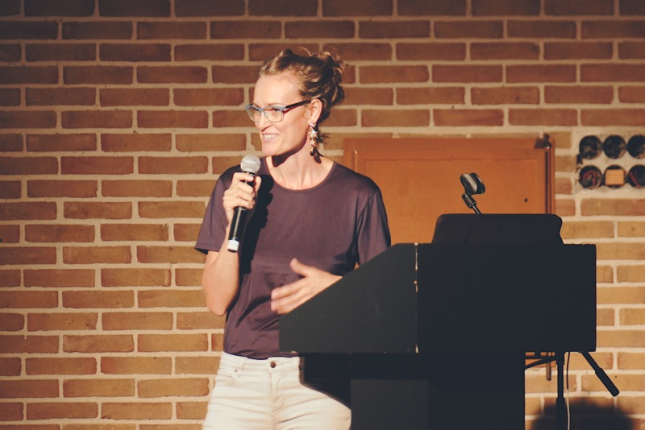

An Interesting Day
A one-day conference on an offbeat schoolyard, hosted by digital product studio Bakken & Bæck.
Thursday August 16, 2018
De School, Amsterdam
Talks
We invited the most interesting people from the tech and design field to talk about their flagship projects, random daydreams and serendipitous strategies. With topics ranging from Minecraft to menstrual cycles, we’re aiming for the unexpected.

Playground
In addition to drawing up our speaker list, we curated an offbeat playground on site. For one day, De School’s former classrooms were filled with installations, games and performances by experimental artists and innovative technologists. Naturally, we hosted a party that stretched well into the night.
Yuri Suzuki
Yuri Suzuki is a sound artist, designer and electronic musician who explores the realms of sound through exquisitely designed pieces. With OTOTO and the AR Music Kit, he invited us to intuitively create electronic musical instruments on site. Imagine a drum kit of saucepans or origami that sing when touched.
The Rodina
Amsterdam based design studio The Rodina debuted their new video-game Poetic Machine Unlearning, in which all players are engineers. Shrunk and deployed into the spheres of artificial intelligence, we were invited to search and fix prejudice, discrimination and other social issues through play.
Teenage Engineering + NSDOS
Tobias von Hofsten (Head of Education at Teenage Engineering) and NSDOS (sound designer and techno hacker) share one ruling passion: exploring the boundaries of sound and technology through inventive instruments. They joined forces at the conference for a three-hour performance, in which they dove deep into the uncharted realms of electronic music.

Katja Heitmann
Choreographer Katja Heitmann examines the ever-evolving relationship between man and machine by exploring the limits of the human body. For An Interesting Day, she invited four of her most skilled dancers to move with precision, control and unavoidable shivers through the mesmerising biotope she dubbed Pandora's Dropbox.
Bjørn Gunnar Staal
Multidisciplinary designer Bjørn Gunnar Staal aims to explore the ways information can travel through different mediums. By interacting with Waveforms – an installation built around a real water surface – we could create patterns that modulated sound waves in real time. This enthralling and experimental water-synth was shown for the first time during An Interesting Day.
What was it all about?
Good question! By hosting An Interesting Day, we want to make a contribution to a solid yet playful tech community. We want to create a space outside of our working lives, in which we can learn from the most interesting people, hang out with old friends and make new ones along the way. This year, we gathered top-notch speakers to share their stories and arranged a playground of performances and installations to wander around in the rest of the day. We wrapped the whole thing up by throwing an afterparty with some of the hottest local DJs.
Who was invited?
In addition to a lot of great people from the European tech and design scene, we invited some of the most brilliant creatives, technologists and entrepreneurs from across the world. As always, we aimed for a fun and diverse crowd of ~250 visitors and welcomed people from all backgrounds to join us at De School.
Special thanks to...
Pasquale D’Silva and Simon Panrucker for hosting the event in style!
Code of Conduct
An Interesting Day should be a friendly place where everyone feels welcome and safe. Bakken & Bæck is dedicated to making the day as interesting and inclusive as possible for all participants, regardless of gender, gender identity and expression, sexual orientation, disability, physical appearance, body size, race, age or religion. If you were being harassed or noticed that someone else was being harassed, please contact us, so that we can avoid situations like that in the future. All reports will be handled in the strictest confidence.
What was it all about?
Good question! By hosting An Interesting Day, we want to make a contribution to a solid yet playful tech community. We want to create a space outside of our working lives, in which we can learn from the most interesting people, hang out with old friends and make new ones along the way. This year, we gathered top-notch speakers to share their stories and arranged a playground of performances and installations to wander around in the rest of the day. We wrapped the whole thing up by throwing an afterparty with some of the hottest local DJs.
Special thanks to...
Pasquale D’Silva and Simon Panrucker for hosting the event in style!
Who was invited?
In addition to a lot of great people from the European tech and design scene, we invited some of the most brilliant creatives, technologists and entrepreneurs from across the world. As always, we aimed for a fun and diverse crowd of ~250 visitors and welcomed people from all backgrounds to join us at De School.
Code of Conduct
An Interesting Day should be a friendly place where everyone feels welcome and safe. Bakken & Bæck is dedicated to making the day as interesting and inclusive as possible for all participants, regardless of gender, gender identity and expression, sexual orientation, disability, physical appearance, body size, race, age or religion. If you were being harassed or noticed that someone else was being harassed, please contact us, so that we can avoid situations like that in the future. All reports will be handled in the strictest confidence.